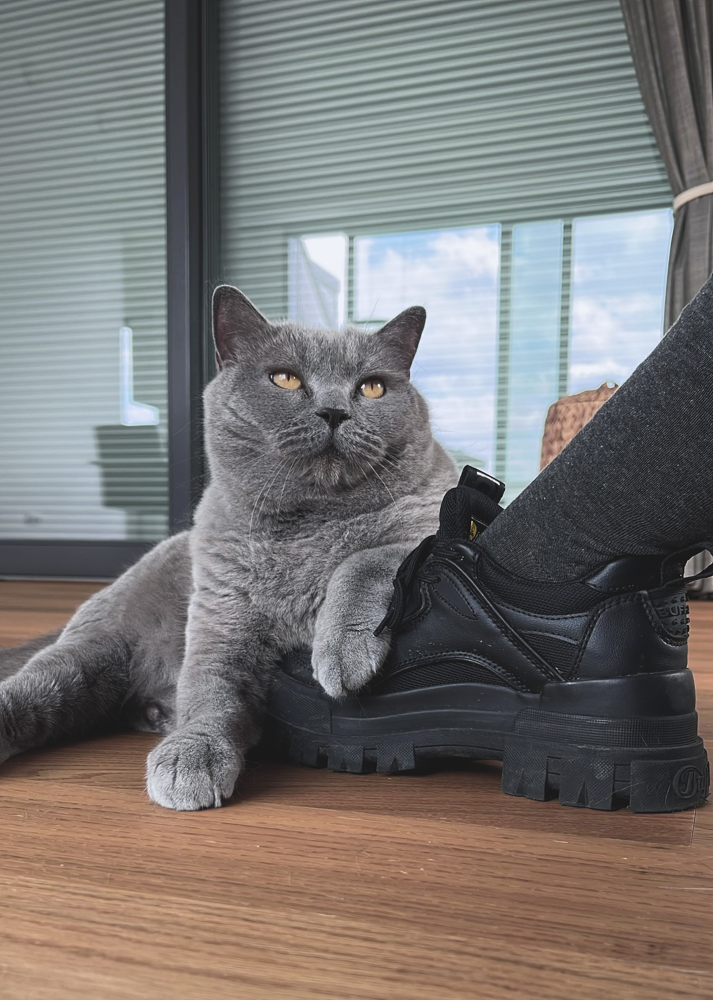
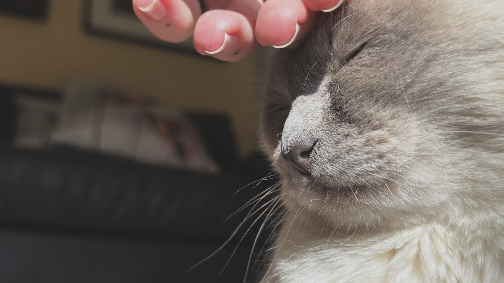
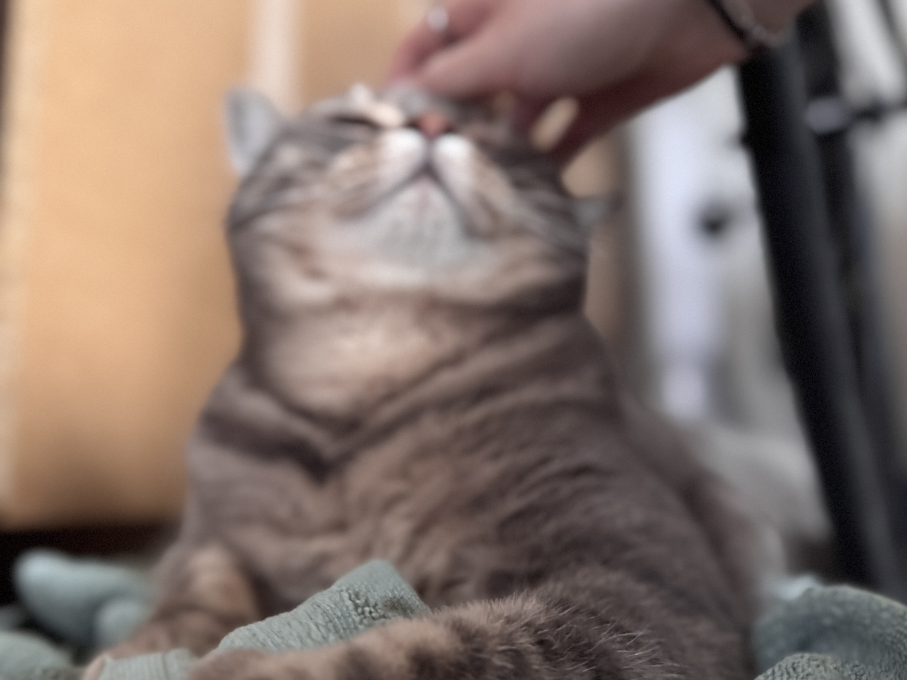
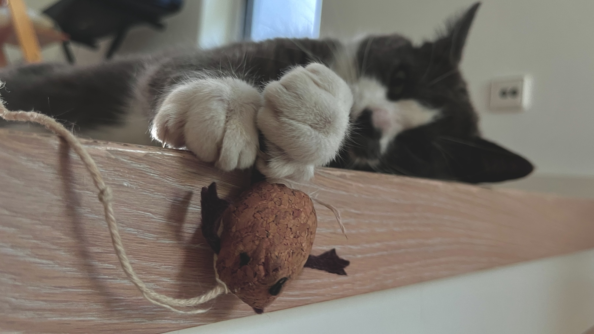
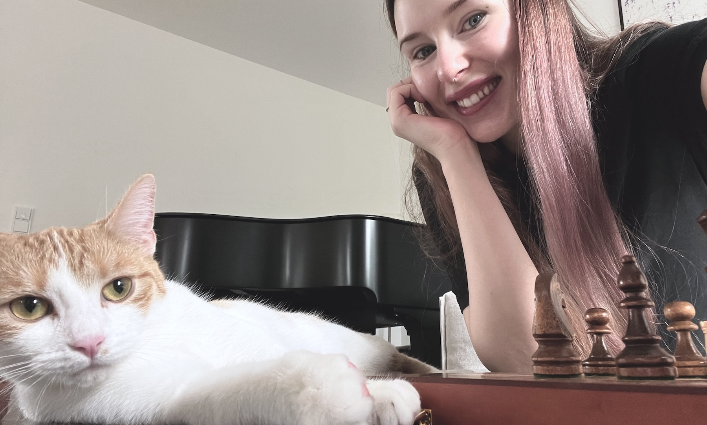
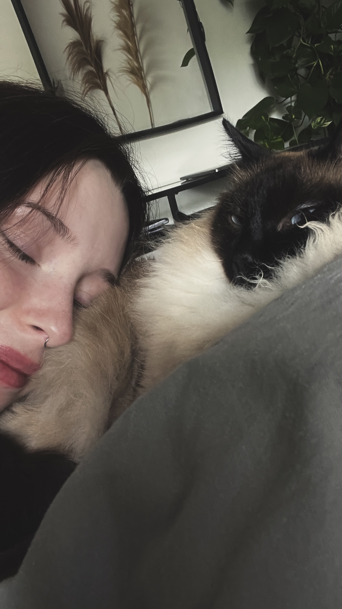
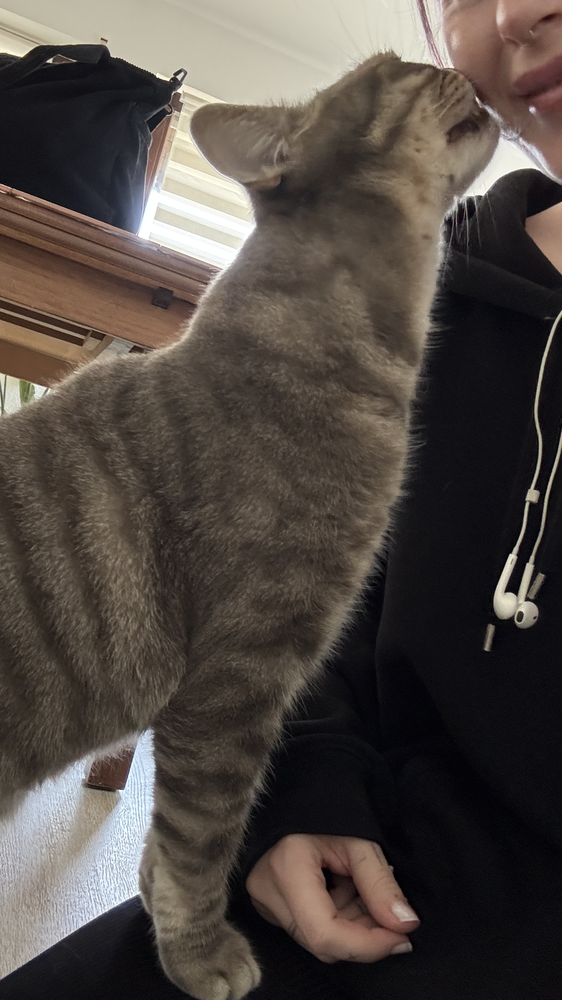

Katzenbetreuung
Auch andere Tiere nach Absprache möglich
Liebevolle Betreuung Ihrer Katze im gewohnten Zuhause – zuverlässig, ruhig und individuell.
ab 15 €
Mehr erfahren
Leistungen

Auch andere Tiere nach Absprache möglich
Liebevolle Betreuung Ihrer Katze im gewohnten Zuhause – zuverlässig, ruhig und individuell.
ab 15 €
Mehr erfahren
Ich begleite Ihre Katze sicher zum Tierarzt, wenn Sie selbst verhindert sind.
Mehr erfahren
Beratung rund um Katzenhaltung, Verhalten und optimale Lebensbedingungen bei Ihnen zu Hause.
Mehr erfahrenÜber mich
Tiere begleiten mich schon mein ganzes Leben. Besonders Katzen faszinieren mich durch ihre feine Wahrnehmung und ihre ganz eigene Persönlichkeit.
Mit über 10 Jahren Erfahrung mit Katzen und 3 Jahre als Betreuerin weiß ich, wie wichtig Vertrauen, Ruhe und Routine für sie sind. Deshalb betreue ich Katzen bevorzugt im gewohnten Zuhause - dort, wo sie sich sicher fühlen.
Mir ist wichtig, dass nicht nur die Katze gut versorgt ist, sondern auch Sie als Halter ein gutes Gefühl haben und entspannt verreisen können.



Katzenwissen
Ein kleiner Einblick in Themen, die im Alltag vieler Katzen eine wichtige Rolle spielen.
Katzen fühlen sich meist dann am sichersten, wenn ihr Alltag möglichst vorhersehbar und konstant bleibt.
Viele Verhaltensweisen werden falsch gedeutet, obwohl sie oft Ausdruck von Stress, Unsicherheit oder Bedürfnissen sind.
Viele Katzen trinken besser, wenn Wasser- und Futterplatz räumlich voneinander getrennt sind.
Erhöhte Liege- und Beobachtungsplätze geben Katzen Sicherheit, Rückzug und Kontrolle über ihre Umgebung.
Kontakt
Sie haben Fragen oder möchten einen Kennenlerntermin vereinbaren? Schreiben Sie mir einfach eine Nachricht.
E-Mail: nadine.mlyneck@gmx.de